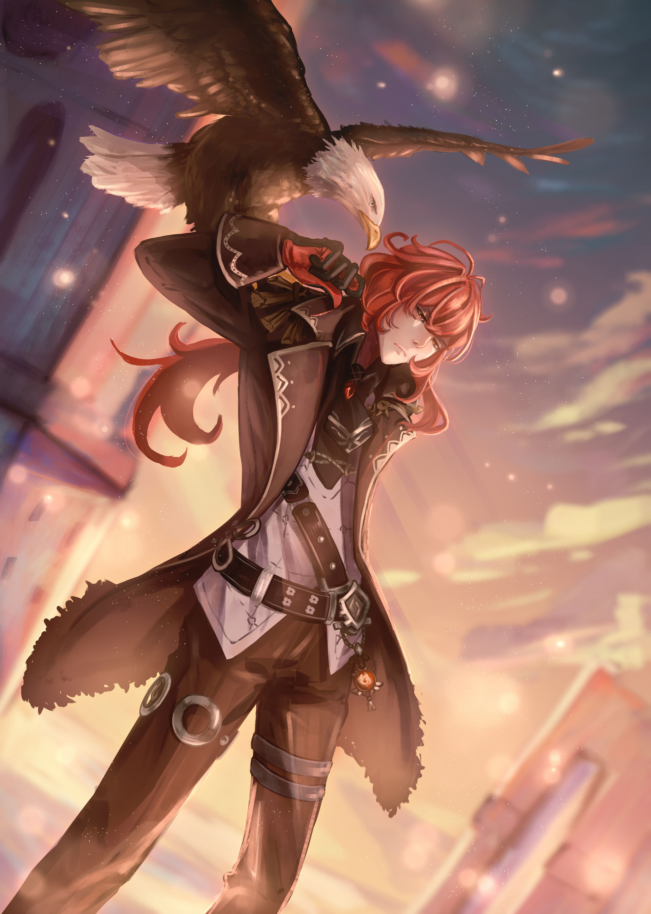
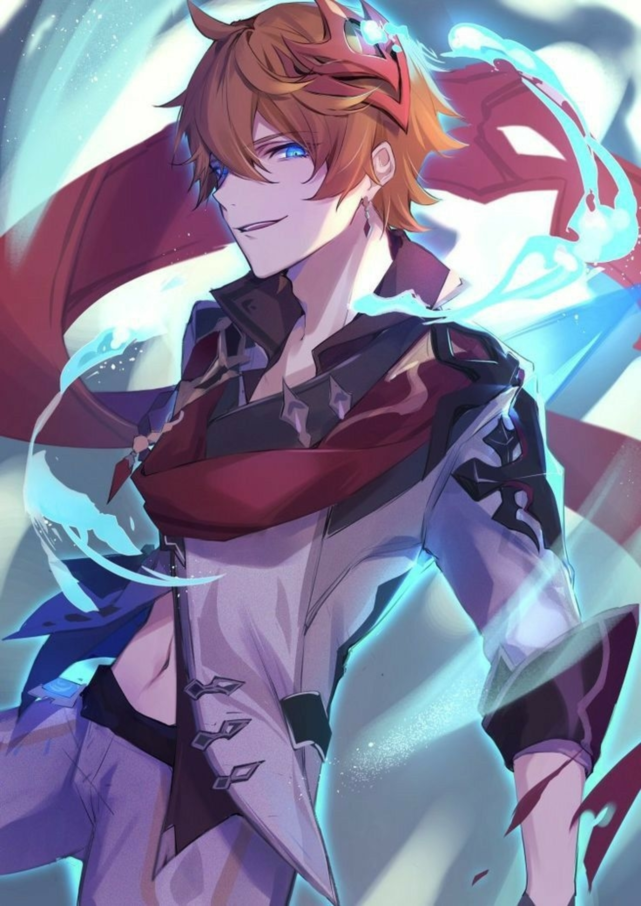
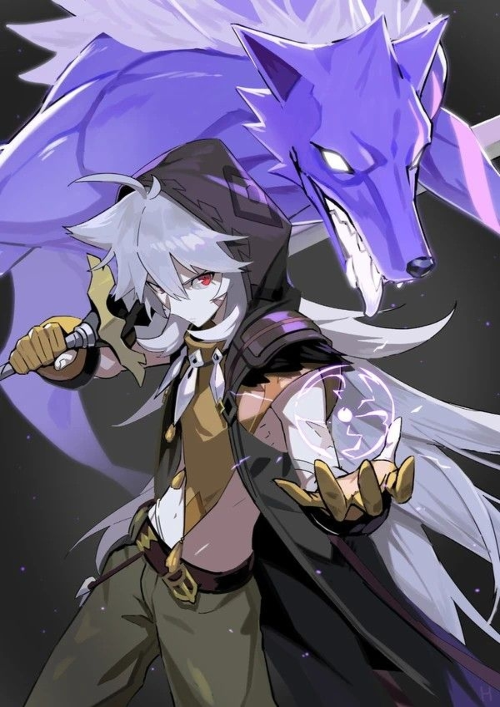

Diluc

Histoire de Diluc :
"Étant l'homme le plus riche de Mondstadt, Diluc se présente
toujours comme un jeune homme élégant et charmant, à l'image
publique parfaite. Sous ce masque se cache un guerrier à la
volonté de fer forgée dans les flammes qui ne recule devant rien
pour protéger Mondstadt. Ne comptez pas sur lui pour ménager ses
adversaires, il sera sans pitié jusqu'à la fin."
-
Caractéristiques :
- Points de vie : 200
- Pourcentage de CC : 10
- Arme de prédilection : Espadon
-
Caractéristiques avec bonus :
- Points de vie : 285
- Pourcentage de CC : 16
Childe

Histoire de Childe :
"Chaleureux et amical une minute, tueur impitoyable la suivante
... Sa personnalité changeante et imprévisible peut laisser son
entourage à court de mots pour le décrire. Mais dans de rares
moments privés, il se passe de titres, se débarasse de son armure
et des couches d'intrigues qui l'accompagnent, et montre sa vraie
personne à ceux qui le craignent."
-
Caractéristiques :
- Points de vie : 180
- Pourcentage de CC : 16
- Arme de prédilection : Lance
-
Caractéristiques avec bonus :
- Points de vie : 275
- Pourcentage de CC : 28
Razor

Histoire de Razor :
"À Mondstadt, il y a une rumeur qui court sur un jeune garçon.
Certains disent que c'est un enfant abandonné que les loups ont
adopté quand il était bébé, d'autres croient qu'il est
l'incarnation d'un loup ... À l'heure actuelle, Razor, doté de ses griffes acérées, court et chasse certainement
dans la forêt avec les loups à l'aide de son instinct et de son
agilité surprenante."
-
Caractéristiques :
- Points de vie : 192
- Pourcentage de CC : 13
- Arme de prédilection : Espadon
-
Caractéristiques avec bonus :
- Points de vie : 280
- Pourcentage de CC : 22
Jean

Histoire de Jean :
"Entièrement dévouée à sa fonction de grande maîtresse intérimaire
de l'Ordre de Favonius, Jean veille sans relâche sur Mondstadt.
Bien qu'elle n'était pas la plus douée de ses pairs, cette jeune
femme est devenue le pilier de l'Ordre grâce à son travail
acharné. Elle protègera Mondstadt coûte que coûte face à toutes
les menaces, notamment celle que représente Sotrmterror."
-
Caractéristiques :
- Points de vie : 170
- Pourcentage de CC : 21
- Arme de prédilection : Épée
-
Caractéristiques avec bonus :
- Points de vie : 270
- Pourcentage de CC : 37
Chongyun

Histoire de Chongyun :
"Exorciste basé à Liyue, et exerçant ses activités de par le
monde. Héritier de l'une des plus célèbres maisons de l'art, il a
un talent dévastateur qu'il ne doit pas à l'enseignement de ses
maîtres, mais à l'impressionnante quantité d'énergie en permanence
au bord de l'implosion qui l'habite."
-
Caractéristiques :
- Points de vie : 166
- Pourcentage de CC : 23
- Arme de prédilection : Espadon
-
Caractéristiques avec bonus :
- Points de vie : 271
- Pourcentage de CC : 40
Xiangling

Histoire de Diluc :
"Étant l'homme le plus riche de Mondstadt, Diluc se présente
toujours comme un jeune homme élégant et charmant, à l'image
publique parfaite. Sous ce masque se cache un guerrier à la
volonté de fer forgée dans les flammes qui ne recule devant rien
pour protéger Mondstadt. Ne comptez pas sur lui pour ménager ses
adversaires, il sera sans pitié jusqu'à la fin."
-
Caractéristiques :
- Points de vie : 200
- Pourcentage de CC : 10
- Arme de prédilection : Espadon
-
Caractéristiques avec bonus :
- Points de vie : 285
- Pourcentage de CC : 16
Albedo

Histoire de Diluc :
"Étant l'homme le plus riche de Mondstadt, Diluc se présente
toujours comme un jeune homme élégant et charmant, à l'image
publique parfaite. Sous ce masque se cache un guerrier à la
volonté de fer forgée dans les flammes qui ne recule devant rien
pour protéger Mondstadt. Ne comptez pas sur lui pour ménager ses
adversaires, il sera sans pitié jusqu'à la fin."
-
Caractéristiques :
- Points de vie : 200
- Pourcentage de CC : 10
- Arme de prédilection : Espadon
-
Caractéristiques avec bonus :
- Points de vie : 285
- Pourcentage de CC : 16